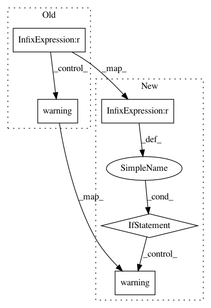

b61833671493bb9fd2acfe48c5a30aaaafd4b571,server/bert_serving/server/__init__.py,BertServer,_run,#BertServer#Any#Any#Any#Any#,84
Before Change
avail_gpu = GPUtil.getAvailable(order="memory", limit=min(num_all_gpu, self.num_worker))
num_avail_gpu = len(avail_gpu)
print(num_avail_gpu)
if 0 < num_avail_gpu < self.num_worker:
self.logger.warning("only %d out of %d GPU(s) is available/free, but "-num_worker=%d"" %
(num_avail_gpu, num_all_gpu, self.num_worker))
self.logger.warning("multiple workers will be allocated to one GPU, "
"may not scale well and may raise out-of-memory")
device_map = (avail_gpu * self.num_worker)[: self.num_worker]
run_on_gpu = True
elif num_avail_gpu == 0:
self.logger.warning("no GPU resource available, fall back to CPU")
except FileNotFoundError:
self.logger.warning("nvidia-smi is missing, often means no gpu on this machine. "
"fall back to cpu!")
self.logger.info("device map: \n\t\t%s" % "\n\t\t".join(
"worker %2d -> %s" % (w_id, ("gpu %2d" % g_id) if g_id >= 0 else "cpu") for w_id, g_id in
enumerate(device_map)))
// start the backend processes
for idx, device_id in enumerate(device_map):
process = BertWorker(idx, self.args, addr_backend, addr_sink, device_id, self.graph_path)
self.processes.append(process)
process.start()
num_req = defaultdict(int)
while True:
try:
request = frontend.recv_multipart()
client, msg, req_id, msg_len = request
if msg == ServerCommand.terminate:
break
elif msg == ServerCommand.show_config:
num_req["config"] += 1
self.logger.info("new config request\treq id: %d\tclient: %s" % (int(req_id), client))
status_runtime = {"client": client.decode("ascii"),
"num_process": len(self.processes),
"ventilator -> worker": addr_backend,
"worker -> sink": addr_sink,
"ventilator <-> sink": addr_front2sink,
"server_current_time": str(datetime.now()),
"num_config_request": num_req["config"],
"num_data_request": num_req["data"],
"run_on_gpu": run_on_gpu}
sink.send_multipart([client, msg, jsonapi.dumps({**status_runtime,
**self.status_args,
**self.status_static}), req_id])
else:
num_req["data"] += 1
self.logger.info("new encode request\treq id: %d\tsize: %d\tclient: %s" %
(int(req_id), int(msg_len), client))
// register a new job at sink
sink.send_multipart([client, ServerCommand.new_job, msg_len, req_id])
job_id = client + b"//" + req_id
if int(msg_len) > self.max_batch_size:
seqs = jsonapi.loads(msg)
// partition the large batch into small batches
s_idx = 0
while s_idx < int(msg_len):
tmp = seqs[s_idx: (s_idx + self.max_batch_size)]
if tmp:
partial_job_id = job_id + b"@%d" % s_idx
backend.send_multipart([partial_job_id, jsonapi.dumps(tmp)])
s_idx += len(tmp)
else:
After Change
avail_gpu = GPUtil.getAvailable(order="memory", limit=min(num_all_gpu, self.num_worker))
num_avail_gpu = len(avail_gpu)
if 0 < num_avail_gpu <= self.num_worker:
if num_avail_gpu < self.num_worker:
self.logger.warning("only %d out of %d GPU(s) is available/free, but "-num_worker=%d"" %
(num_avail_gpu, num_all_gpu, self.num_worker))
self.logger.warning("multiple workers will be allocated to one GPU, "
"may not scale well and may raise out-of-memory")
device_map = (avail_gpu * self.num_worker)[: self.num_worker]
run_on_gpu = True
elif num_avail_gpu == 0:
self.logger.warning("no GPU resource available, fall back to CPU")
In pattern: SUPERPATTERN
Frequency: 3
Non-data size: 5
Instances
Project Name: hanxiao/bert-as-service
Commit Name: b61833671493bb9fd2acfe48c5a30aaaafd4b571
Time: 2018-12-16
Author: hanhxiao@tencent.com
File Name: server/bert_serving/server/__init__.py
Class Name: BertServer
Method Name: _run
Project Name: catalyst-team/catalyst
Commit Name: b27d8def595b8974ad255792d969a043233c09df
Time: 2019-10-30
Author: tez.romach@gmail.com
File Name: catalyst/utils/compression.py
Class Name:
Method Name:
Project Name: catalyst-team/catalyst
Commit Name: b27d8def595b8974ad255792d969a043233c09df
Time: 2019-10-30
Author: tez.romach@gmail.com
File Name: catalyst/utils/serialization.py
Class Name:
Method Name: